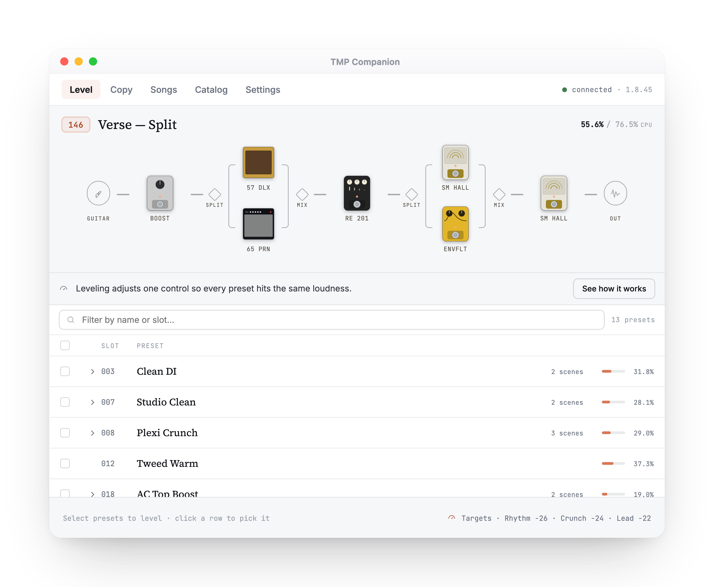
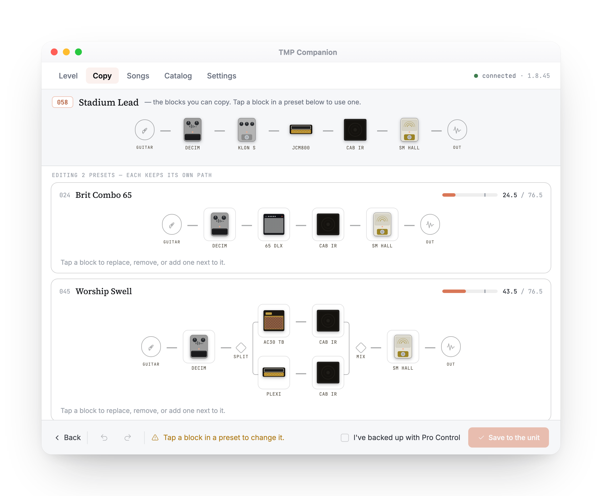
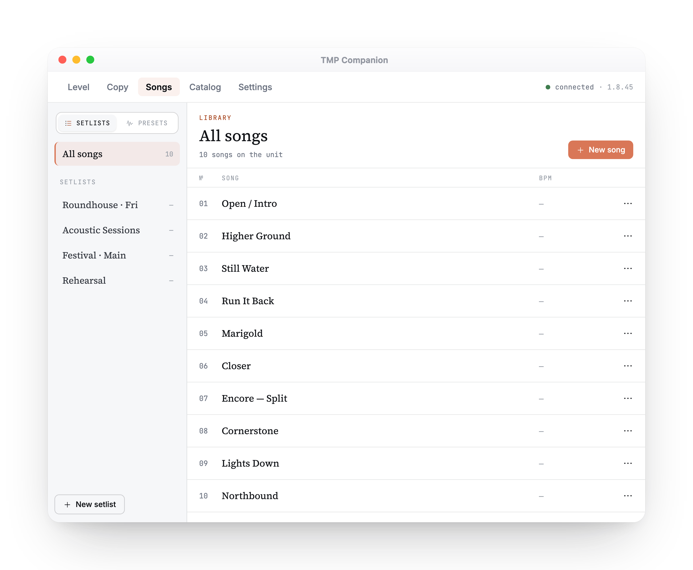
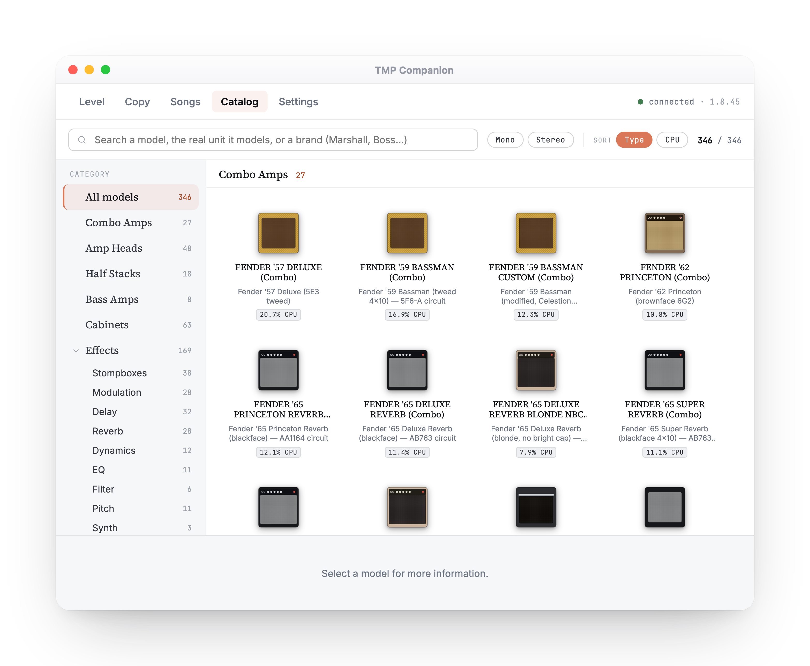

Every preset, the same loudness.
Auto-level your Fender Tone Master Pro presets to a consistent loudness over USB — no guitar required.

Set every preset to the same loudness.
Measure each preset's real, integrated loudness over USB and set its exact level — per preset, per scene, per footswitch. Pick a target and the run trims each one to match, so nothing leaps or drops when you switch live.

Move blocks between presets.
Copy, replace, insert, or remove signal-chain blocks across presets — pick what to copy from, choose where it lands, and review before it's applied. Nothing changes on the unit until you save.

Build songs and setlists.
Keep your songs and setlists in playing order, each linked to the presets it needs — so you can see at a glance which sounds every song in the set calls for.

The full model catalog.
Every amp, cab, mic, and stompbox on the unit, by its real name — 300+ models across Combo Amps, Amp Heads, Half Stacks, Bass Amps, Cabinets, and Effects. See each block's CPU cost and mono / stereo routing, so you can budget your signal path before it touches the hardware.